Mission Phase Log
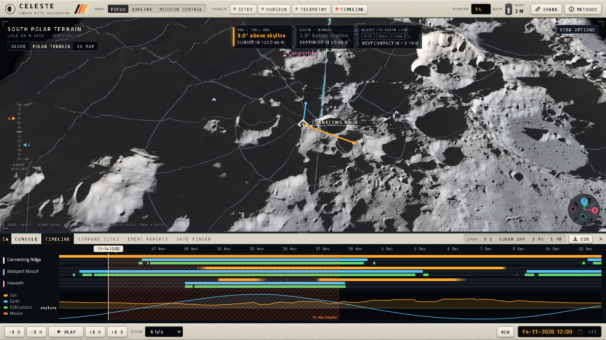
SOUTH POLAR TERRAIN
VIEW OPTIONS
Telemetry Module
Telemetry Module

Pick a landing site and a date. CELESTE shows where the Sun and the Earth are against the site's real terrain horizon, how long until sunset or Earthset, which Deep Space Network antenna can reach it, and how a mission starting then compares with other sites or other dates.
At the lunar south pole the Sun skims the horizon. A few kilometres can mean constant light or weeks of darkness, and Earth can drop behind a crater rim. CELESTE makes that visible in seconds, for mission planners, students and the public, with no installation, no server and no API keys.
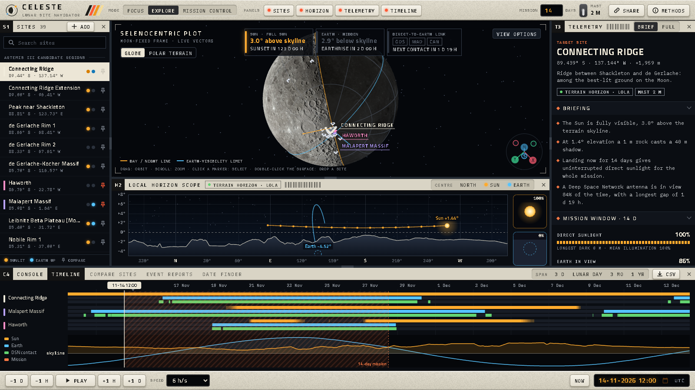
Day/night line, Earth-visibility limit, and a plain-language briefing. Double-click anywhere to drop a custom site.
NASA LOLA 80 m relief of the south pole (7600 × 7600 samples) with GPU ray-marched shadows on a 4096² map.
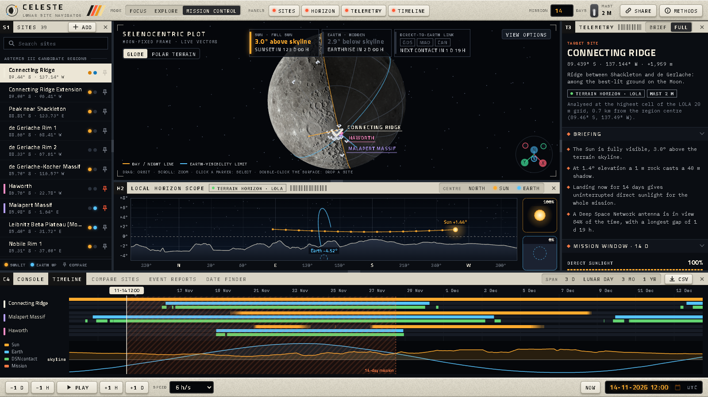
Focus, Explore and Mission control modes: trackers, DSN stations, solar power, event reports and CSV export.
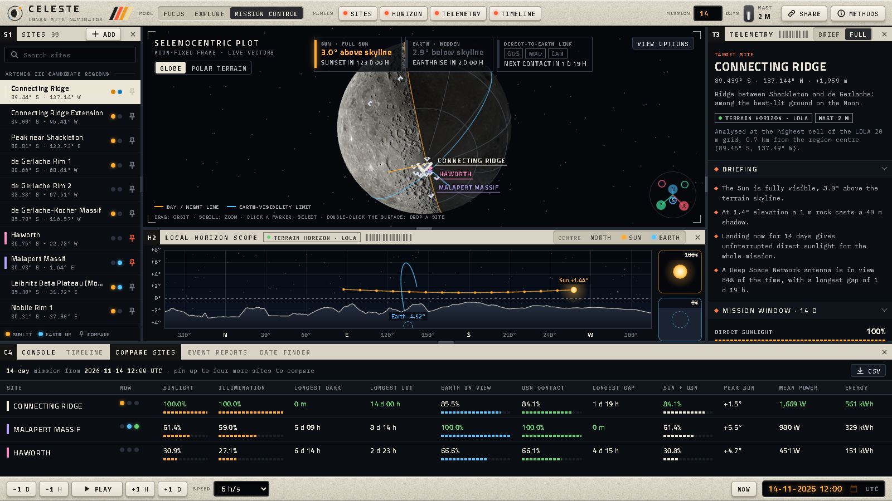
39 curated sites or any coordinate; up to five side by side on sunlight, Earth view, DSN contact and energy.
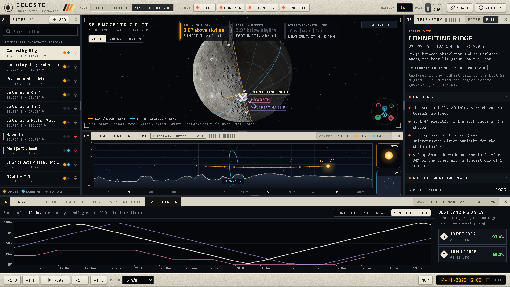
Scrub or play from 10 min/s to 5 days/s. The date finder scores every landing date and ranks the best.
360° LOLA skyline (1,440 rays to 350 km), both disks at true scale, countdowns to sunset and Earthset.
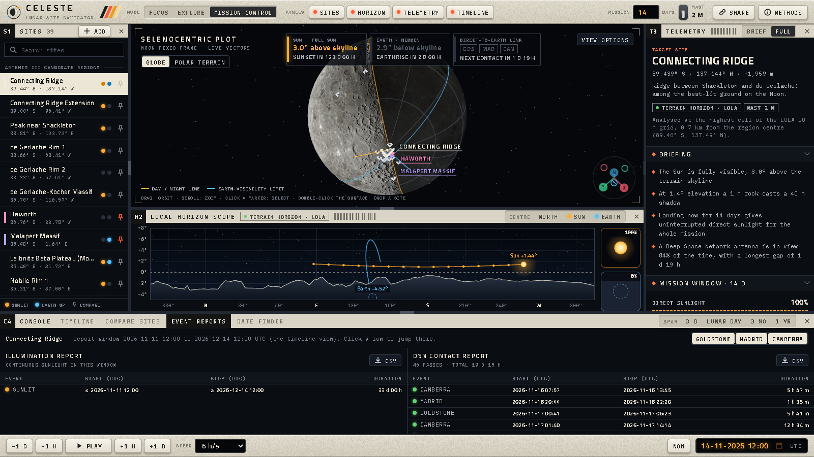
Solar elevation, visible disk, irradiance and kWh for three array types; line of sight to Goldstone, Madrid and Canberra.
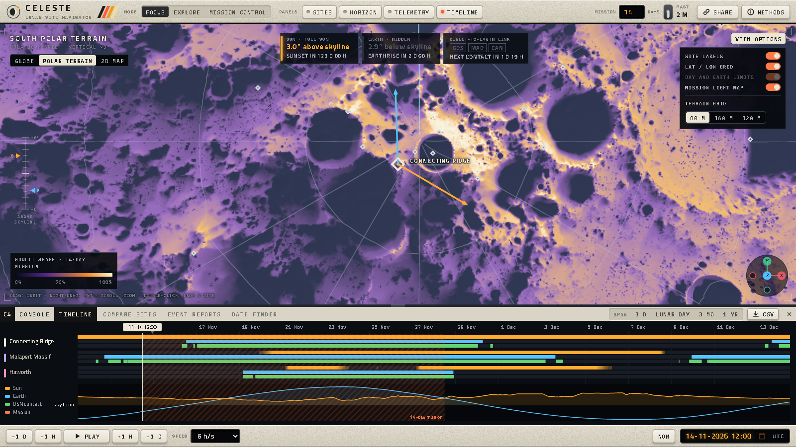
The mission-illumination map drops from ~100% to 0% sunlit within a few km. The mast switch shows what 8 m buys.
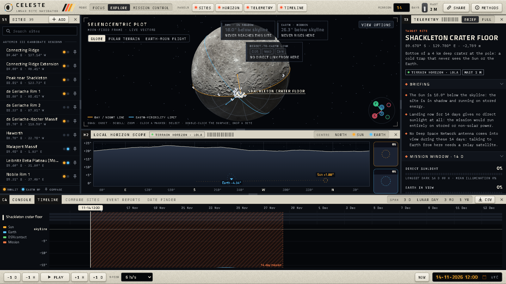
Tests confirm Shackleton's floor never sees the Sun or Earth, and Chang'e 4 on the far side never sees Earth.
Pick any of 104 lunar missions and fly it: liftoff, parking orbit, translunar coast, lunar orbit, descent and touchdown, with stage separation, engine plumes and live speed, altitude and distances. Switch between Overview, Earth, Moon, Follow and Cinematic cameras, 3D or 2D plan, Earth–Moon or Sun–Earth–Moon scale, then jump to the landing site for its sunlight, Earth and DSN analysis.
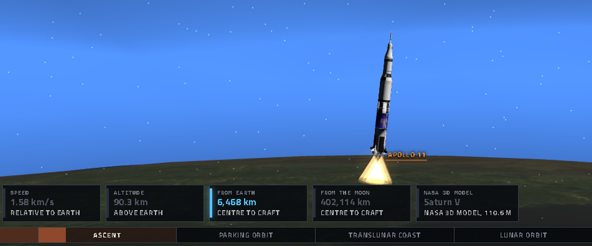
Saturn V (NASA 3D model) climbing out of Kennedy LC-39.
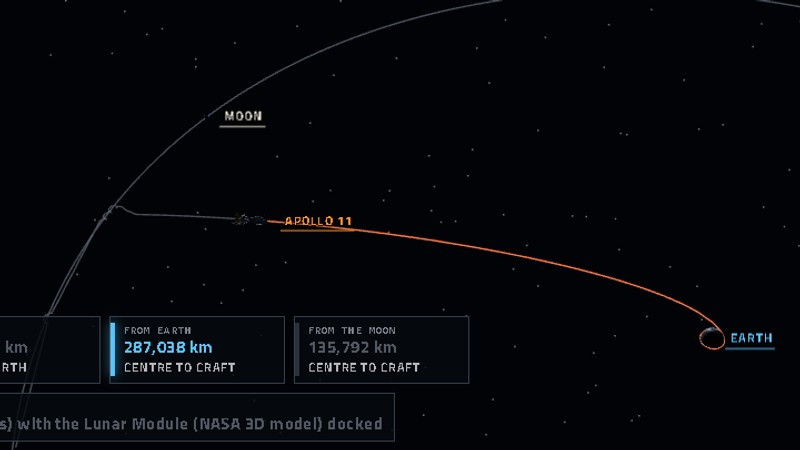
The whole Earth–Moon trajectory at true positions.
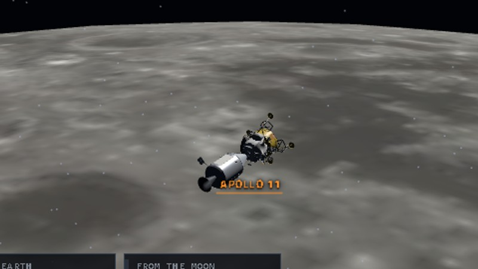
CSM with the Lunar Module docked, 100 km above the Moon.
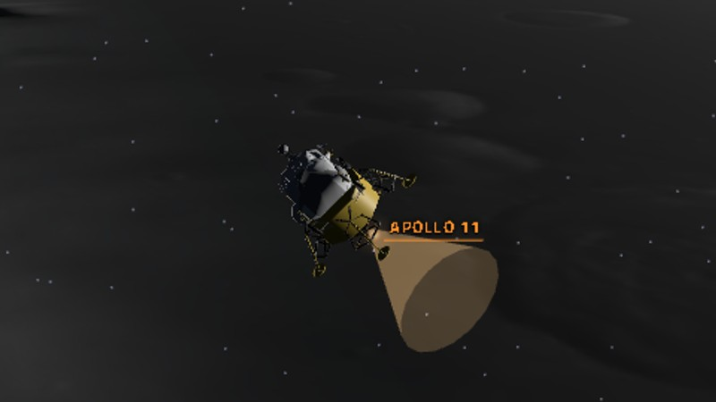
Lunar Module on its way to Tranquility Base.
Trajectories are reconstructed from launch site, dates and landing site: they show the shape and timing of each flight, not the flown path.
| SOURCE | WHAT IT POWERS |
|---|---|
| LRO LOLA elevation · NASA PDS Geosciences | Terrain, skylines and shadows from eight LOLA grids (10 m to 1.9 km) |
| South-pole LOLA sites · NASA GSFC PGDA | High-resolution products behind the south-pole site list (Barker et al. 2021) |
| JPL Horizons · DE441 | Ground truth for every Sun and Earth angle; spacecraft paths in the flight view |
| DSN Handbook 810-005 · NASA/JPL | Goldstone, Madrid and Canberra antenna positions |
| CGI Moon Kit · NASA Goddard SVS | LROC WAC colour and LOLA relief textures for the globe |
| Moon Trek · NASA/JPL | LROC WAC 100 m imagery around landing sites |
| Blue Marble + GIBS · NASA EOSDIS | Earth globe and Landsat imagery of launch sites |
| NASA 3D Resources | Saturn V, Lunar Module, LRO, LADEE and Clementine models |
| NSSDCA lunar timeline | 104-mission catalogue and landing coordinates |
Also linked in the app: LROC QuickMap, NASA Moon Trek and the CSA Moon exploration portal. The site list includes ISRO, JAXA and CNSA landers.
The full app runs right here, nothing to install. For the best experience (keyboard shortcuts, full GPU terrain), open it full screen. Keys: 1 Focus · 2 Explore · 3 Mission control · G globe · F flight · O orrery.